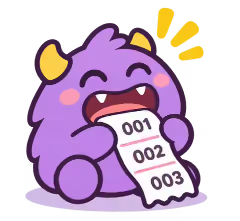

快速取號
顧客透過門市連結或 QR Code 領取號碼。
手機維修、服務櫃檯的排隊取號與即時叫號系統。店員一鍵叫下一位，現場顯示器和顧客手機同步更新，支援過號、重叫與隊列管理。
不需登入即可操作 DEMO；展示資料為模擬，不會送出正式訂單或預約。

現場或線上取號後，店員一鍵叫號；目前號碼同步顯示在門市看板和顧客手機，減少人工口頭確認。
直接套進日常經營流程，不必先理解複雜系統。
顧客透過門市連結或 QR Code 領取號碼。
支援叫下一位、重叫、過號與狀態更正。
現場螢幕和顧客手機看到同一隊列的最新進度。
可以，店家依門市需要個別啟用取號及叫號功能。
可以，店家後台提供重叫與狀態修正操作。
是，現場看板和顧客網頁會反映更新的號碼；LINE 主動推播屬另外的通知功能。